The ownership and display of stolen artifacts from other countries has become a topic of significant concern and debate for decades. This document is brought to you by the International Centre for the Study of the Preservation and Restoration of Cultural Property, an intergovernmental organization that is dedicated to promoting the conservation of cultural heritage across the globe.

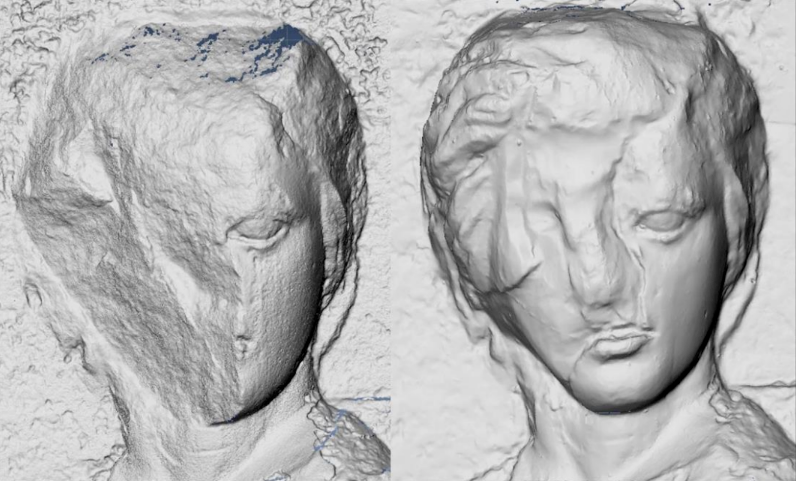
Each page of this multimedia document will be dedicated to a particular stolen artifact, presenting its historical significance and the region from which it originates. Throughout the pages, you will find valuable insights and intriguing details that expand upon the significance of these stolen artifacts. We invite you to embark on a journey of discovery, where you will gain a deeper understanding of the issues surrounding stolen artifacts and their impact on cultural heritage. Join us in our commitment to preserving and restoring the treasures that connect us to our shared human history.
Our aim is to raise awareness and foster a deep understanding of the complex issues that sur- round stolen artifacts. We believe that digital literature can play a vital role in informing the public about the importance of preserving cultural heritage and the consequences of holding on to stolen artifacts. This brochure is specifically designed for individuals like you who are from countries where stolen artifacts are displayed. By providing detailed information about specific artifacts that have been taken from their native countries and are currently on display elsewhere, we hope to shed light on the ethical and cultural implications involved.
Benin Bronzes
The Benin bronzes are a collection of artefacts that include metal plaques and sculptures that decorated the Kingdom of Benin, which now lies in modern day Nigeria. The bronzes make up the best examples of Benin art and were created from the thirteenth century by artists of the edo people. The bronzes typically depict scenes or represent themes in the history of the Kingdom.
These artefacts were taken from the ravaged kingdom during a British punitive expedition in 1897 and later sold to German museums in Berlin, Hamburg, Stuttgart and Cologne. Most ended up at auction in London, where an estimated 3,000 objects eventually made their way into museums and private collections around the world.
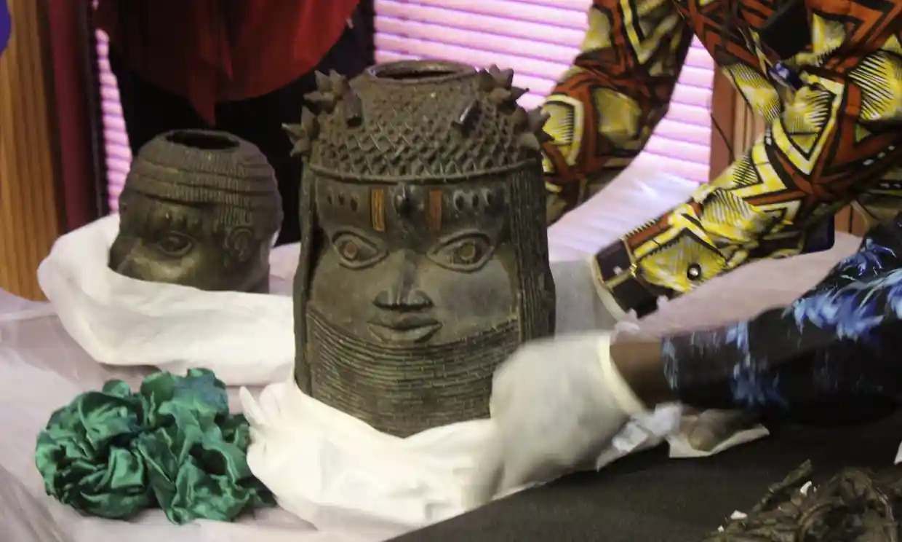
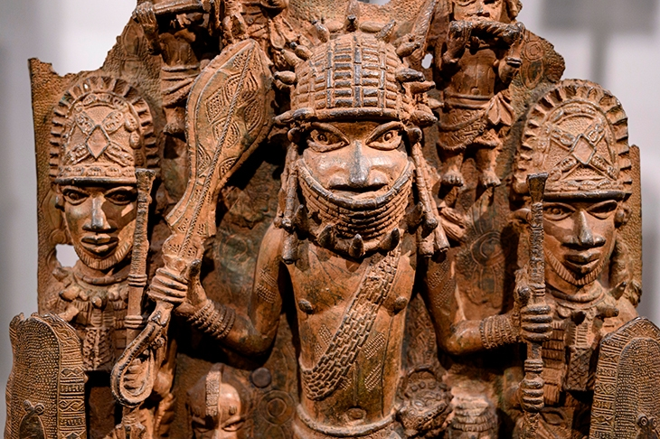
Ownership of more than 1,000 bronzes that ended up in Germany was legally transferred to Nigeria last July, five months before the symbolic handover, in the capital, Abuja, of the 21 outstanding items.
Several of the UK’s smaller institutions have also joined the great repatriation of Benin plunder, with the University of Cambridge last month pledging to return more than 100 objects, after similar moves by Jesus College, Cambridge, and the University of Aberdeen. The Horniman Museum in south London returned six bronzes in November.
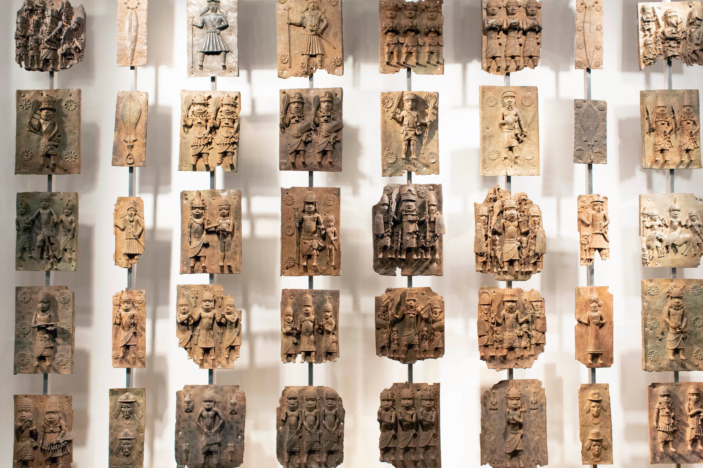
Haida Nation Carved Argillite
The Haida Nation’s argillite carvings are a collection of artefacts – including wooden carvings, utensils, and clothing – that were stolen by various groups back in the late 1800s. The small museum of Buxton in Derbyshire, England – who had a collection of various Haida artefacts including the argillite carvings – has offered as a part of a remarkable year-long initiative, to return an entire collection of Native American and First Nation artefacts – 51 items in total – to their original communities.
The last of them, 12 objects including ceremonial stone weapons, flint arrowheads and a medicine bag, were dispatched last month to members of the Siksika nation in Blackfoot Crossing in Alberta, Canada.
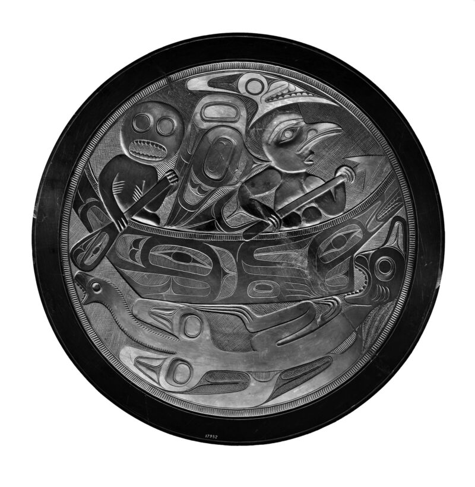
The debate over restitution may be dominated by a few famous artworks, but the thorny issues of decolonisation and return of artefacts have long been grappled with by museums in Britain and beyond. What makes Buxton’s move unusual, according to Ros Westwood, the museum’s manager, was that rather than waiting for a request from Indigenous communities for items to be returned, it actively sought them out to offer.
She describes an exquisitely carved platter made of a fine black slate called argillite, one of the items returned to Haida Gwaii. “I got to know it over about 20 years. It was one of those objects that just said to me [that] it should not be sitting in a museum store. It should be somewhere where people are understanding it.”
Yemeni Artefact
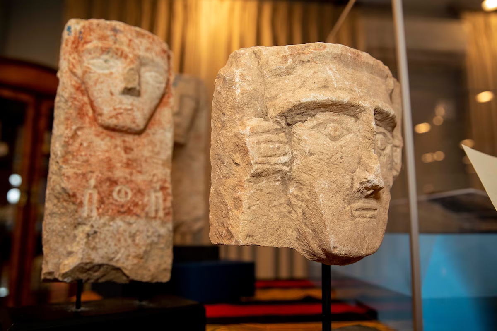
The Yemeni artefacts that are primarily composed of funerary stones, bronze cookware, and folios from early Qurans. The United States has repatriated 77 looted artifacts back to Yemen. But as part of a landmark agreement, the Smithsonian’s National Museum of Asian Art in Washington, DC will care for and store the items for at least two years as Yemen remains engulfed in a bitter civil war.
Among the artifacts being returned are 65 funerary stones, known as “stelae,” that date back to the second half of the first millennium BC. Featuring engraved faces, some of the objects contain traces of pigment or inscriptions revealing the names of the deceased.
A museum spokesperson told CNN that the stones were most likely looted from archaeological sites in northwestern Yemen. The Quranic folios are meanwhile thought to date back to the 9th century. An inscribed bronze bowl is also among the cache of artifacts.
The US Department of Justice said that 64 of the stelae were forfeited to officials during an investigation into Mousa Khouli, a convicted smuggler who sold plundered artifacts via his New York store, Windsor Antiques. The other 13 items were intercepted as they were being smuggled into the US, the Smithsonian said in a press release.
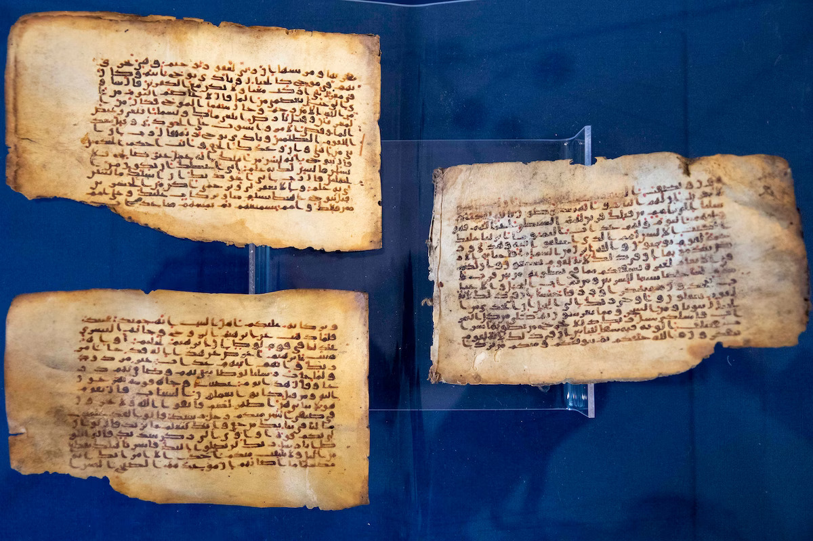
Parthenon Marbles
The Parthenon Sculptures, also known as the "Elgin Marbles" or "Parthenon Marbles" were taken from Greece in the early 19th century and have been displayed in Britain ever since – however, the debate over who rightfully owns these Greek atifacts continues to this day. The British Museum and the Greek government are in the midst of talks over whether the museum will return the marbles.
The marbles were taken from the Parthenon between 1801 and 1805 by Lord Elgin, the British Ambassador to the Ottoman Empire, according to the British Museum. The museum says the Ottoman Empire was the governing authority over Athens at the time, and Elgin removed half of the remaining sculptures from the ruins of the Parthenon with the permission of Ottman authorities.
Can a governing power such as the Ottoman Empire rightfully give away the artifacts of the cultural state it rules – like the Grecian marble sculptures? The British Museum claims Elgin's transaction was done legally. "His actions were thoroughly investigated by a Parliamentary Select Committee in 1816 and found to be entirely legal, prior to the sculptures entering the collection of the British Museum by Act of Parliament," the British Museum said.
However, Greek authorities disagree. "The violent detachment of the Parthenon Sculptures from their physical context and the architectural setting that they were part of violated the laws, the common sense of justice and the established morals at the time," said the Office of the Secretary General for Greeks Abroad and Public Diplomacy in Athens in a statement to ABC News.
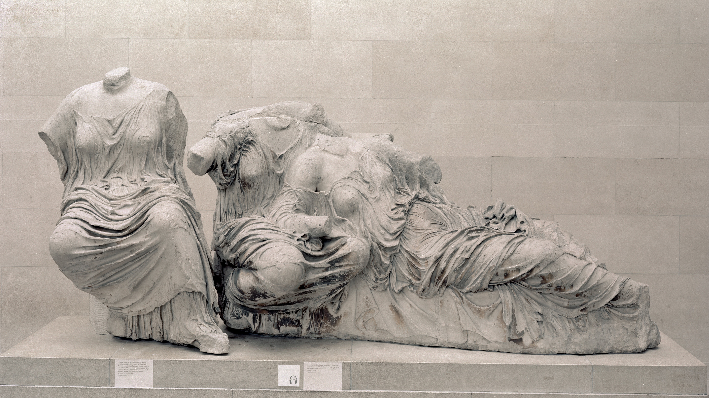
Egyptian Sarcophagus
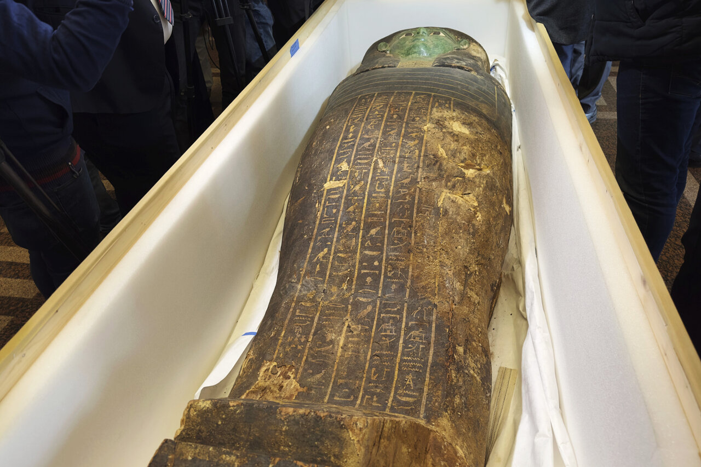
An ancient wooden sarcophagus that was displayed at the Houston Museum of Natural Science has been returned to Egypt after US authorities determined it was looted years ago. The repatriation was part of Egyptian government efforts to stop the trafficking of its stolen antiquities. In 2021, authorities in Cairo succeeded in getting 5,300 stolen artefacts returned to Egypt from across the world.
Mostafa Waziri, the top official at the Supreme Council of Antiquities, said the sarcophagus dates back to the late dynastic period of ancient Egypt, an era that spanned the last of the Pharaonic rulers from 664BC until Alexander the Great’s campaign in 332BC.
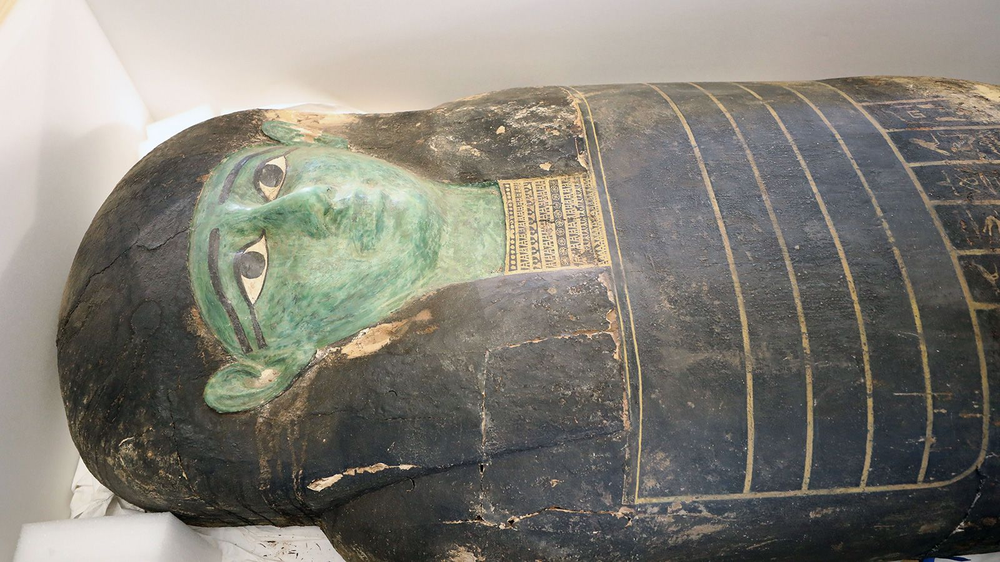
The sarcophagus, almost 3 metres (9.5 ft) tall with a brightly painted top surface, may have belonged to an ancient priest named Ankhenmaat, though some of the inscription on it has been erased, Waziri said. It was symbolically handed over at a ceremony on Monday in Cairo by Daniel Rubinstein, the US chargé d’affaires in Egypt.
The handover came more than three months after the Manhattan district attorney’s office determined the sarcophagus was looted from Abu Sir Necropolis, north of Cairo. It was smuggled through Germany into the US in 2008, according to Manhattan district attorney Alvin L Bragg.
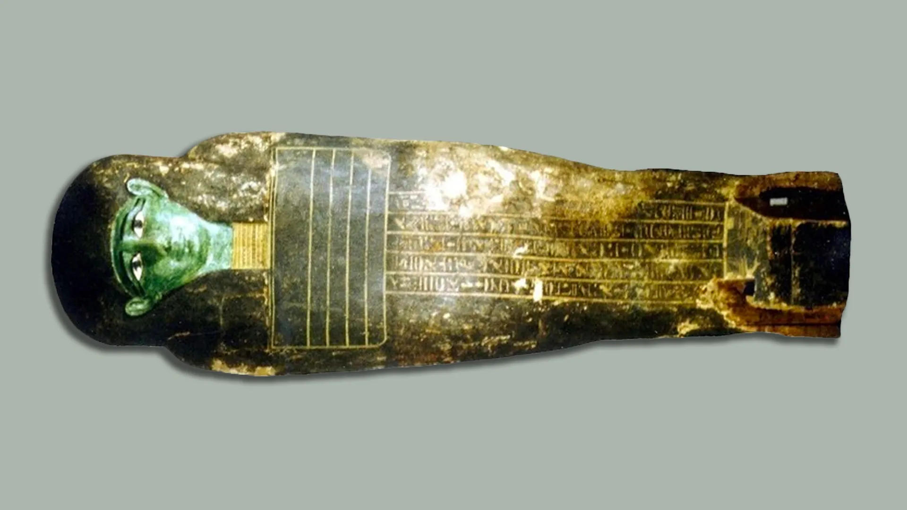